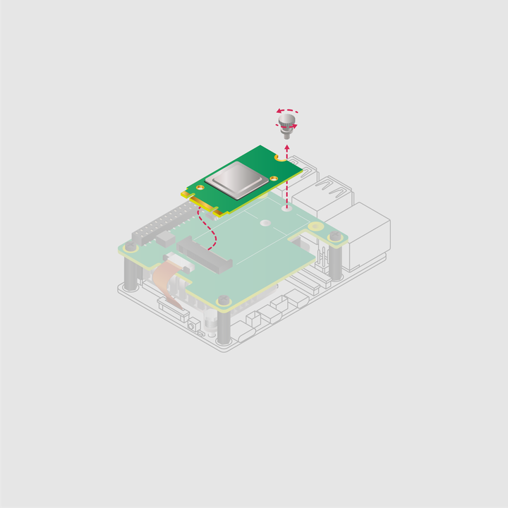
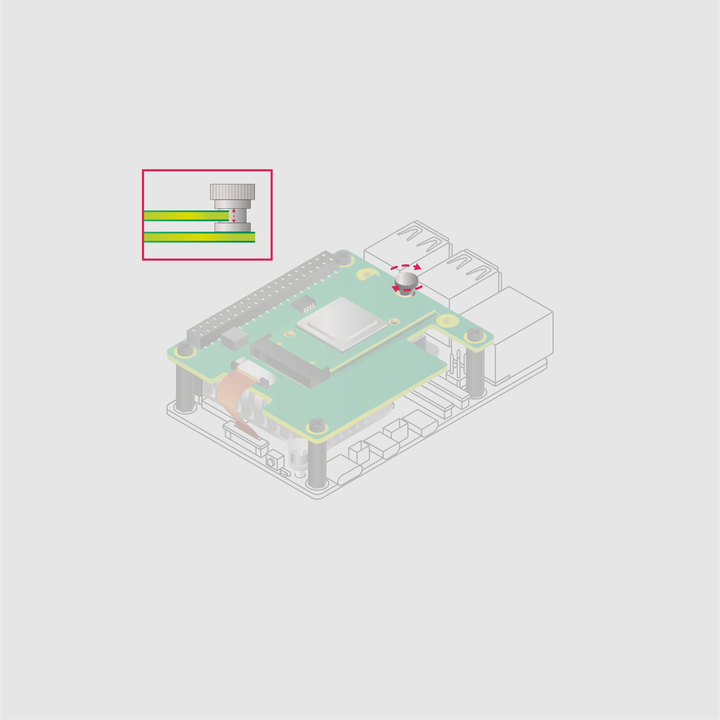
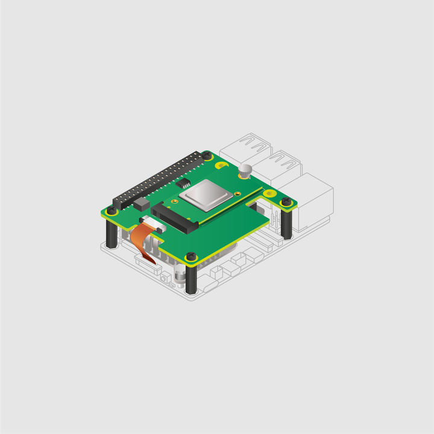

Remove the drive attachment screw by turning the screw counter-clockwise. Insert your M.2 SSD into the M.2 key edge connector, sliding the drive into the slot at a slight upward angle. Don't force the drive into the slot: it slides in gently.

Push the notch on the drive attachment screw into the slot at the end of your M.2 drive. Push the drive flat against the M.2 HAT+, and insert the SSD attachment screw by turning the screw clockwise until the SSD feels secure. Do not over-tighten the screw. We recommend that you check the cable regularly.

Congratulations, you have successfully installed the M.2 HAT+.

Figure 3. Installed M.2 HAT+